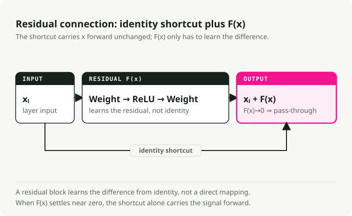
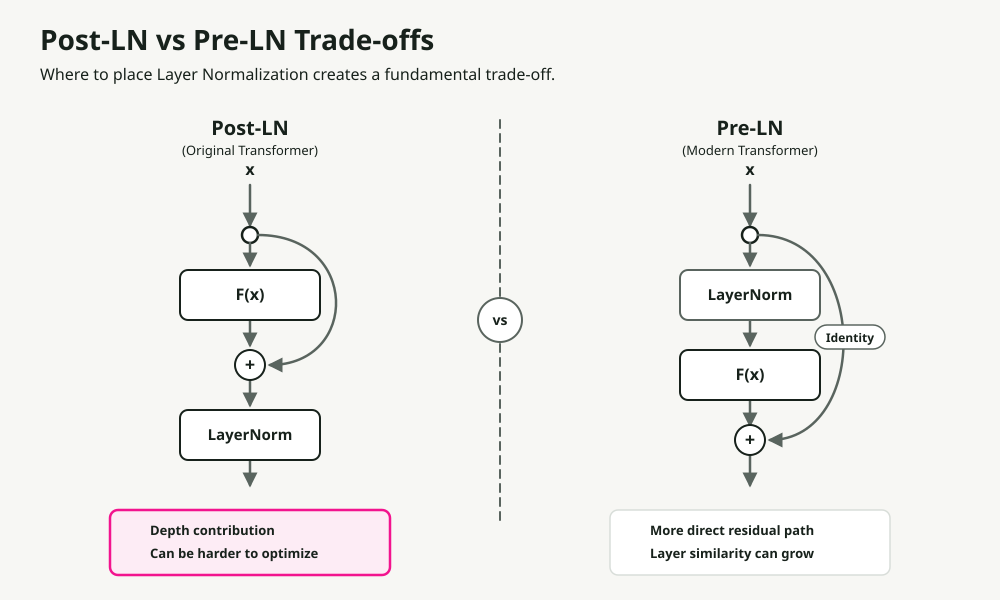
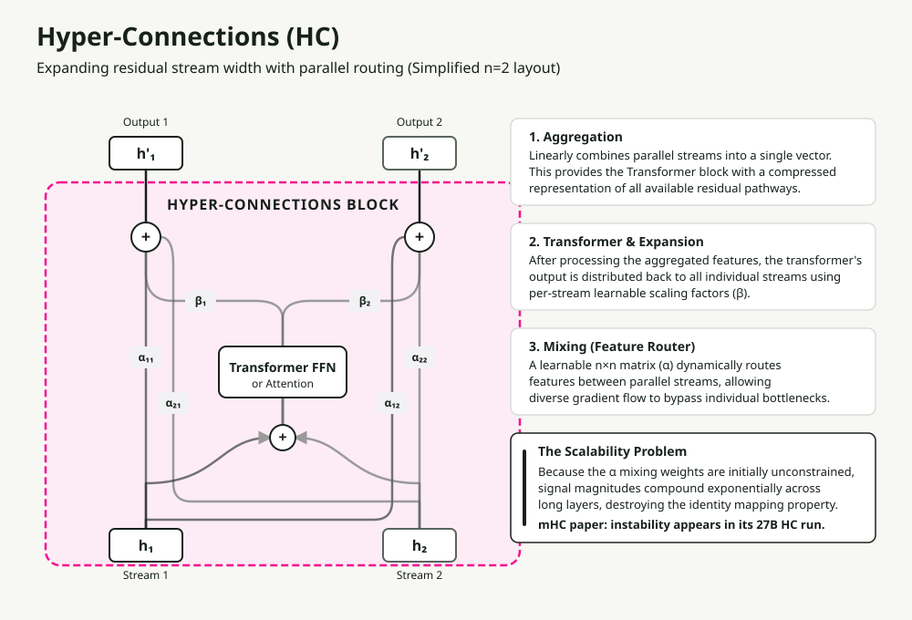
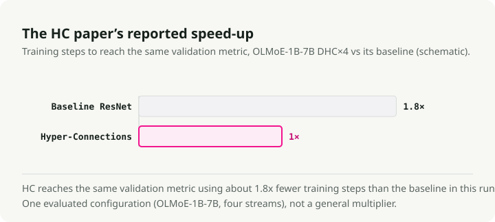
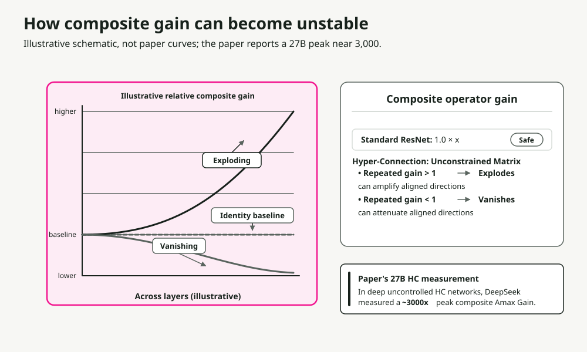
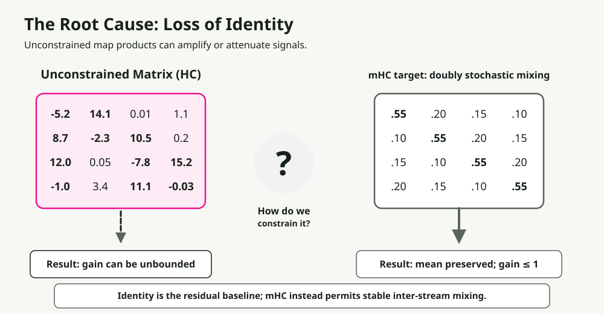
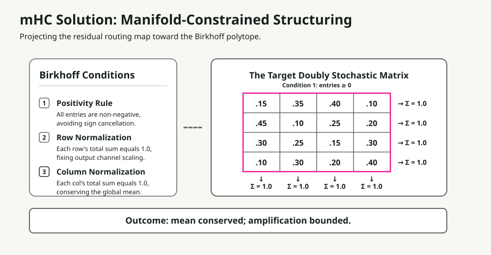
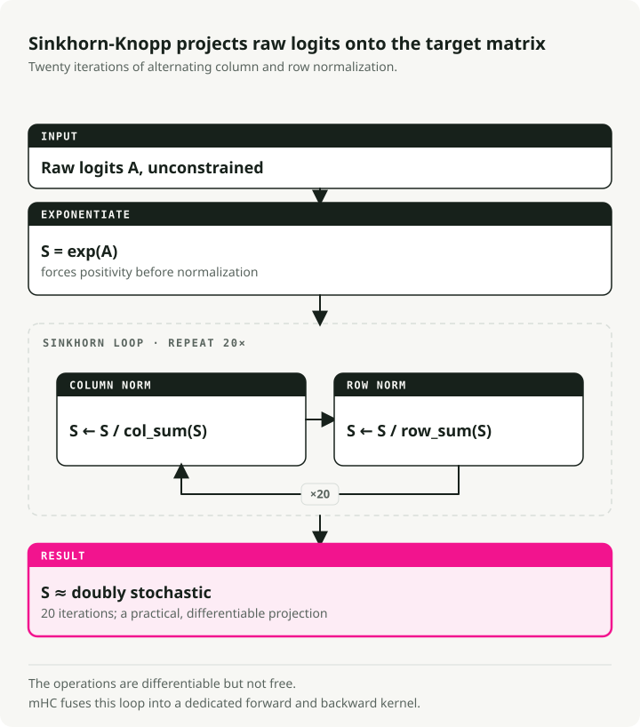
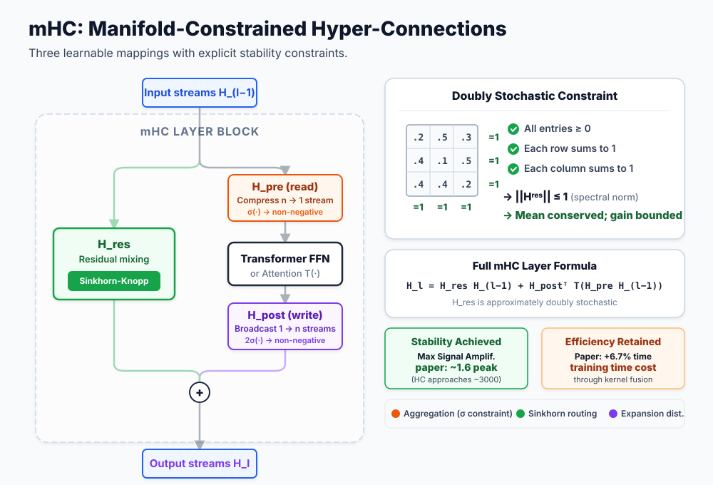

Manifold-Constrained Hyper-Connections (mHC): DeepSeek Residual Scaling Explained
Modern deep learning rests on the residual connection. After a decade of stacking layers deeper, researchers at DeepSeek asked a different question: what if we scaled width instead? Their answer, Manifold-Constrained Hyper-Connections (mHC), fixes a long-standing stability problem with width scaling.
In this post, I'll walk through the evolution from basic residuals to mHC, explaining why each step was necessary and how DeepSeek's solution actually works at scale.
TL;DR: Hyper-Connections expand residual streams into multiple parallel flows for faster convergence, but break the identity mapping that keeps training stable. mHC restores stability by constraining mixing matrices to the Birkhoff Polytope (doubly stochastic matrices) using the differentiable Sinkhorn-Knopp algorithm. Result: 4 parallel streams at only 6.7% training overhead.
Why residual connections work
Before we get to what mHC fixes, we need what it builds on.
The Depth Problem
Stacking more layers should increase a model's capacity. In practice, very deep networks become harder to train. The capacity is there. Gradient-based optimization is what fails: gradients vanish (shrinking to near-zero) or explode (growing without bound) as they propagate through many layers.
The Residual Solution
The ResNet paper introduced an elegant fix. Instead of learning a direct mapping, learn the residual, the difference from identity:

The trick is the identity shortcut. When the residual function F(x) outputs zero, the layer becomes a perfect pass-through. Two consequences follow:
- Gradient highway: Gradients flow directly through the shortcut, sidestepping vanishing.
- Easy optimization: If identity is optimal, the network just learns F(x) → 0.
This one architectural change made networks with hundreds of layers trainable.
The Transformer Complication: Layer Normalization Placement
Transformers added a new variable: where to put Layer Normalization (LN). The decision looks minor and isn't.

| Variant | LN Placement | Advantage | Key Limitation |
|---|---|---|---|
| Post-LN | After residual block | High model capacity | Gradient vanishing: LN in the main path rescales gradients each layer |
| Pre-LN | Before residual block | Excellent stability | Representation collapse: features become similar across layers |
The ResiDual architecture tried to solve this with dual residual paths, one Pre-LN for stability and one Post-LN for capacity. Still a single residual stream though. What if you could have multiple parallel streams?
Hyper-Connections: The Width Revolution
Hyper-Connections (HC) took a different route. Don't just add depth, expand the residual stream's width.

What is a "Stream"?
In standard transformers, the input token embeddings form a single \(d\)-dimensional vector representing the token's features. This single vector sequence is the "residual stream" that passes through every block.
In Hyper-Connections, a stream is one of \(n\) parallel instantiations of this state.
How do we get them? At the start of the network, the initial input embedding is replicated \(n\) times (where \(n\) is the "expansion rate", typically 4). The standard \(d\)-dimensional hidden state becomes an \(n \times d\) "hyper hidden matrix".
These \(n\) identical streams pass through the network's transformer layers, where they get aggregated, routed, and expanded differently by the mechanisms below. So they immediately diverge and capture distinct representation pathways.
Core Mechanisms
Instead of one residual pathway, HC keeps \(n\) parallel streams flowing through the entire network. At each transformer block, three operations run, each controlled by small learnable weights:
- Aggregation (\(H_{pre}\), pre-mapping): The \(n\) incoming streams compress into a single vector for the transformer block, using a learnable matrix \(H_{pre}\). Each stream gets multiplied by a learnable importance weight, so this acts as an input filter.
- Expansion (\(H_{post}\), post-mapping): After the core transformer block (Attention or MLP), its output gets broadcast into \(n\) separate streams using a learnable matrix \(H_{post}\). Acts as an output gate, with each stream scaled by a unique learnable weight.
- Mixing (inter-stream routing): The newly expanded streams merge with the original residual streams. An \(n \times n\) learnable "feature router" matrix (\(\mathbf{H}^{res}\)) decides how information from each stream bleeds into the others, cross-pollinating features before the next layer.
The mixing matrix H is the traffic controller: it routes features between streams based on learned patterns. Information flows much more richly than through a single residual path.
The Results

HC converges roughly 1.8× faster than standard residuals. The parallel streams give gradients more pathways and let the network keep more diverse representations.
The Catch
There's a critical issue: HC is unstable at scale.
Why Hyper-Connections Break
The flexibility that powers HC is also what breaks it. It destroys the identity mapping that makes residuals trainable in the first place.

The Math of Instability
In standard residuals:
When \(F(x) \rightarrow 0\), this is identity: \(x_{l+1} = x_l\). Signal passes through unchanged.
In Hyper-Connections, the residual path includes a matrix multiplication:
Over L layers, the signal becomes:
If values in H deviate even slightly from 1.0, this product either:
- Explodes: values > 1.0 compound exponentially.
- Vanishes: values < 1.0 decay exponentially.
The DeepSeek team measured this with "Amax Gain Magnitude", which tracks the maximum ratio of output to input signal magnitude across all layers. In standard HC, this hits ~3000 in deep networks. At that point training is no longer viable.

The core problem: unconstrained matrices can take any value (negative numbers, large magnitudes, anything). We need a way to keep them in the "well-behaved" set, where they preserve signal energy the way identity does.
The mHC Solution: Geometric Constraints
The mHC insight is that you can have flexible routing and stability if you constrain the mixing matrices to a specific mathematical structure: the Birkhoff Polytope, the set of all doubly stochastic matrices, where every row and column sums to 1 and all elements are non-negative.

The Three Constraints
mHC constrains the mixing matrix H^res to be doubly stochastic: all entries non-negative, every row and column summing to exactly 1. That enforces three properties at once:
| Constraint | Rule | Why It Matters |
|---|---|---|
| Positivity | All elements > 0 | Prevents the sign oscillation that destabilizes gradients |
| Row Sum = 1 | Each row sums to 1.0 | Normalizes output contribution; no single stream dominates |
| Column Sum = 1 | Each column sums to 1.0 | Normalizes input distribution; all streams contribute fairly |
The critical outcome: Energy In = Energy Out. Signal magnitude is preserved deep into the network, which kills the exponential explosion problem.
This constraint also has useful mathematical consequences:
- Spectral norm ≤ 1: The spectral norm (largest singular value) bounds signal amplification. Doubly stochastic matrices are mathematically non-expanding.
- Closed under multiplication: Composing doubly stochastic matrices gives another doubly stochastic matrix.
- Weighted averaging: The operation becomes a convex combination (a weighted average where weights sum to 1) of the inputs, preserving total signal magnitude.
The Sinkhorn-Knopp Algorithm
The challenge: how do you force a learnable matrix to be doubly stochastic while keeping it differentiable? The Sinkhorn-Knopp algorithm does it. It's an iterative projection that converges to doubly stochastic form in just a few steps.

A walkthrough with a concrete example:
Step 1: Positivity. Apply exp() to raw weights so all elements are strictly positive:
Raw Matrix → Positive Matrix
[-0.5 2.1 0.8] [0.6 7.9 2.2] Σ=10.7
[ 1.3 -4.0 1.9] exp [3.7 0.02 6.7] Σ=10.4
[ 0.1 0.6 -0.2] → [1.1 1.8 0.8] Σ=3.7
Step 2: Row normalization. Divide each row by its sum:
Positive Matrix → Row Normalized
[0.6 7.9 2.2] [0.25 0.65 0.10] Σ=1.0
[3.7 0.02 6.7] /row [0.35 0.01 0.64] Σ=1.0
[1.1 1.8 0.8] → [0.30 0.45 0.25] Σ=1.0
Σ=0.9 Σ=1.1 Σ=0.99 ← columns not yet =1
Step 3: Column normalization. Divide each column by its sum:
Row Normalized → Doubly Stochastic
[0.25 0.65 0.10] [0.28 0.45 0.27] Σ=1.0
[0.35 0.01 0.64] /col [0.40 0.09 0.51] Σ=1.0
[0.30 0.45 0.25] → [0.32 0.46 0.22] Σ=1.0
Σ=1.0 Σ=1.0 Σ=1.0 ← converges in few iterations
Step 4: Iterate. Repeat steps 2-3 for t_max iterations (typically 20) until convergence.
The whole process is differentiable, so gradients flow through during training. Sinkhorn-Knopp is also cheap, adding minimal overhead to the training loop.
Initialization matters too.
Initialization Refinements
To make training start stable:
- Sigmoid over Tanh: Coefficients stay non-negative and bounded (0 to 1).
- Scalar 2 multiplier: Sigmoid outputs ~0.5 at initialization. Multiplying by 2 gives an initial weight of ~1.0, matching identity behavior.
Complete mHC Architecture
All together:

The flow through each block:
- Input: \(n\) parallel residual streams enter the layer.
- Aggregation (\(H_{pre}\)): The \(n\) streams combine into a single vector via a weighted sum using the \(H_{pre}\) matrix. In mHC these aggregation weights are locally constrained (\(\sigma(\cdot)\)) to be non-negative, which prevents unnatural scaling and destructive interference.
- Computation: The standard Transformer block (Attention or MLP) processes the single aggregated vector.
- Expansion (\(H_{post}\)): The block's single output is broadcast and scaled out to \(n\) separate update streams using the \(H_{post}\) matrix, which is also constrained to be non-negative.
- Mixing (\(H_{res}\) routing): The streams share information via an \(n \times n\) mixing matrix \(\mathbf{H}^{res}\). In mHC this matrix is strictly constrained to the Birkhoff Polytope (doubly stochastic), so signal energy is conserved.
- Output: The updated \(n\) streams move on to the next layer without exploding or vanishing.
The key difference from standard HC: every mixing and aggregation operation passes through a Sinkhorn constraint or similar normalization. That's what keeps signal stable across hundreds of layers.
Infrastructure: Making It Practical
Expanding to n=4 streams creates real overhead. Each stream needs its own memory, and Sinkhorn adds 20 iterations per layer. The DeepSeek team got around it with several optimizations.
Kernel Fusion
Using TileLang, they fused Sinkhorn iterations with mixed-precision multiplications into specialized CUDA kernels. That cuts round-trips to high-bandwidth memory (HBM), which is usually the actual bottleneck on modern hardware.
Selective Recomputation
Storing every intermediate Sinkhorn state for backpropagation would blow up memory. Instead, mHC:
- Frees intermediate activations after the forward pass.
- Recomputes them on-the-fly during the backward pass.
A modified DualPipe schedule overlaps that recomputation with gradient communication, so the recompute cost is mostly hidden.
Results
With these optimizations, expansion rate n=4 runs at only 6.7% training overhead versus baseline. Complex topological routing is practical at scale.
Empirical Validation
Do the theoretical guarantees actually translate to real improvements?
The raw training dynamics are stark. Without constraints, deep networks using standard Hyper-Connections see their signal magnitude (Amax Gain) blow up to roughly 3,000, with massive instability and frequent loss spikes. With the doubly stochastic constraint enforced, mHC keeps Amax Gain near ~1.6 throughout training.
But stability doesn't matter if model performance degrades. To test representational capacity, the team evaluated an mHC-27B model (built on the DeepSeek-V3 architecture) against both standard ResNet and unconstrained HC baselines. On reasoning benchmarks like GSM8K and MATH, mHC consistently wins. The performance gains from parallel stream routing are real, and with Sinkhorn constraints you can finally train these very wide residual pathways without the training run falling apart.
Trade-offs and Considerations
mHC isn't a free lunch. Three things worth flagging:
- Computational overhead: 6.7% is small for what it gives you, but it's still extra cost compared to standard residuals.
- Implementation complexity: You can't write this in plain PyTorch and expect it to be fast. The low overhead requires custom, finely-tuned CUDA kernels.
- Strong inductive bias: The doubly stochastic constraint enforces strict signal conservation. If your task genuinely needs signal amplification deeper in the network, this constraint actively fights you.
Key Takeaways
- Residual connections work because of identity mapping: the ability to pass signals through unchanged.
- Hyper-Connections scale width instead of depth, enabling faster convergence through multi-stream routing.
- The flexibility of HC destroys identity mapping, causing signal explosion in deep networks.
- mHC constrains mixing matrices to the Birkhoff Polytope, mathematically guaranteeing stability.
- Sinkhorn-Knopp makes the constraint differentiable, enabling end-to-end training.
- Infrastructure work (kernel fusion, selective recomputation) is what makes the whole thing practical.
For practitioners: if you're hitting limits with depth scaling and you have access to custom kernel development, mHC is a principled way to scale capacity through width while keeping training stable.
References
- mHC: Manifold-Constrained Hyper-Connections - Xie et al. (DeepSeek)
- Deep Residual Learning for Image Recognition - He et al. (ResNet)
- Hyper-Connections - Original HC paper
- TileLang - CUDA kernel optimization framework
- DualPipe - Pipeline parallelism scheduler for DeepSeek-V3
- ResiDual - Dual residual path architecture